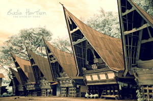

SEJARAH
Sejarah Asal Mula Suku Batak
Orang Batak adalah penutur bahasa Austronesia namun tidak diketahui kapan nenek moyang orang Batak pertama kali bermukim di Tapanuli dan Sumatera Timur. Bahasa dan bukti-bukti arkeologi menunjukkan bahwa orang yang berbahasa Austronesia dari Taiwan telah berpindah ke wilayah Filipina dan Indonesia sekitar 2.500 tahun lalu, yaitu di zaman batu muda (Neolitikum).
Karena hingga sekarang belum ada artefak Neolitikum(Zaman Batu Muda) yang ditemukan di wilayah Batak maka dapat diduga bahwa nenek moyang Batak baru bermigrasi ke Sumatera Utara di zaman logam. Pada abad ke-6, pedagang-pedagang Tamil asal India mendirikan kota dagang Barus, di pesisir barat Sumatera Utara. Mereka berdagang kapur Barus yang diusahakan oleh petani-petani di pedalaman. Kapur Barus dari tanah Batak bermutu tinggi sehingga menjadi salah satu komoditas ekspor di samping kemenyan.
Pada abad ke-10, Barus diserang oleh Sriwijaya. Hal ini menyebabkan terusirnya pedagang-pedagang Tamil dari pesisir Sumatera]. Pada masa-masa berikutnya, perdagangan kapur Barus mulai banyak dikuasai oleh pedagang Minangkabau yang mendirikan koloni di pesisir barat dan timur Sumatera Utara. Koloni-koloni mereka terbentang dari Barus, Sorkam, hingga Natal. Batak merupakan salah satu suku bangsa di Indonesia. Nama ini merupakan sebuah tema kolektif untuk mengidentifikasikan beberapa suku bangsa yang bermukim dan berasal dari Tapanuli dan Sumatera Timur, di Sumatera Utara.
Suku bangsa yang dikategorikan sebagai Batak adalah: Batak Toba, Batak Karo, Batak Pakpak, Batak Simalungun, Batak Angkola, dan Batak Mandailing. Mayoritas orang Batak menganut agama Kristen dan sisanya beragama Islam. Tetapi ada pula yang menganut agama Malim dan juga menganut kepercayaan animisme (disebut Sipelebegu atau Parbegu), walaupun kini jumlah penganut kedua ajaran ini sudah semakin berkurang.
Contac
Sitoluama
Phone: +6282-7011-1948
Email: hutahaeanhengki@mail.com